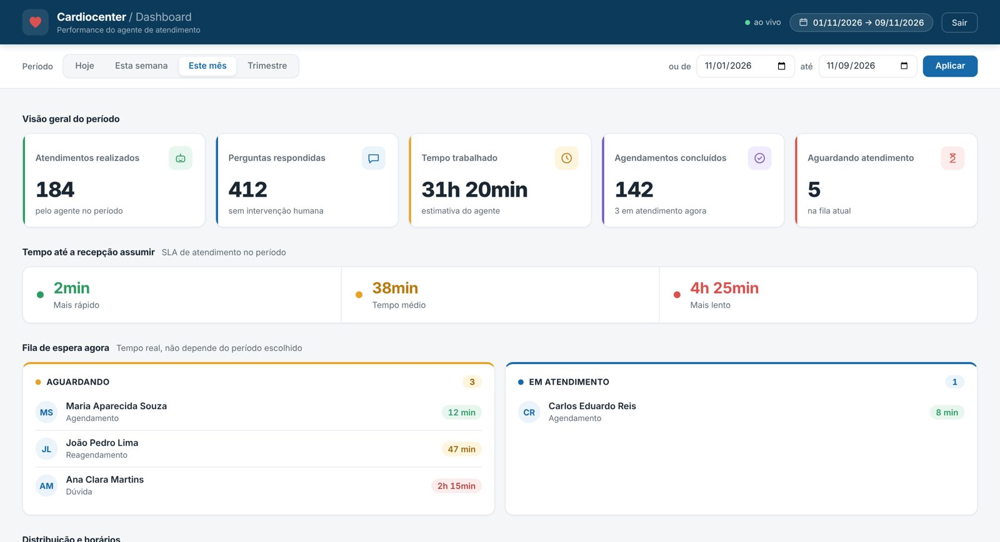

Atendimento no WhatsApp que funciona sozinho, 24 horas por dia.
Sou o Marcelo Heck. Crio agentes de IA que atendem e pré-agendam pelo WhatsApp, lembretes automáticos que reduzem faltas e painéis para a equipe acompanhar tudo. Projetos reais, em produção, com números para mostrar.
Olá! Aqui é da Clínica. Como podemos te ajudar? Responda com o número:
1. Consulta
2. Exame
3. Reagendamento
4. Cancelamento22:41
122:42
Pode me informar seu nome completo?22:42
📎 exame_sangue.pdf22:43
Recebemos seu arquivo, obrigado! Nossa equipe vai analisar e retornar por aqui.22:43
Case Clínica Cardiocenter (Florianópolis) · dados reais do banco, de 08/07 a 21/10/2026
2.601
pacientes atendidos pelo agente no WhatsApp
616
pacientes atendidos fora do horário da clínica
72,8%
dos pacientes responderam ao lembrete automático
125
remarcações e cancelamentos avisados antes, em vez de falta
Case real
Clínica Cardiocenter: da recepção sobrecarregada a um atendimento que não para.
A clínica recebia centenas de mensagens por semana, inclusive à noite e no fim de semana, e perdia horários com pacientes que faltavam sem avisar. Construí e mantenho o sistema inteiro, que está em produção desde julho de 2026.
Agente de IA no WhatsApp
Responde dúvidas, valores, preparo de exames e convênios, e faz o pré-agendamento completo: médico, convênio, exames e dia preferido. A recepção recebe tudo pronto.
Lembretes de consulta pela API oficial
A agenda do dia seguinte é lida sozinha. O paciente confirma, remarca ou cancela com um toque, e a resposta já aparece para a equipe.
Painel da recepção
Cards de agendamento, confirmações, conversa completa com o paciente e login individual para cada atendente.
Arquivos pelo WhatsApp
PDFs, fotos e áudios que o paciente manda chegam ao painel com botões para abrir, imprimir e baixar.

Dashboard de performance criado para a clínica (dados ilustrativos, sem informações de pacientes).
“Destacamos, principalmente, a disponibilidade, a atenção e o comprometimento do Marcelo em ouvir nossas necessidades e buscar soluções para que o sistema se adequasse cada vez mais à realidade e às demandas da nossa clínica. Recomendamos seus serviços com confiança e satisfação!”
Clínica Cardiocenter · Florianópolis, SC · depoimento de outubro de 2026
Teste agora
Demonstrações que você pode abrir no celular.
Versões de demonstração para um negócio fictício. Converse com o agente e veja como ele se comporta.
Tudo abaixo foi projetado, desenvolvido e é mantido por mim. O código-fonte não fica aberto: por proteção do meu trabalho e dos dados dos clientes, apresento o código e a arquitetura numa conversa. As demonstrações estão liberadas para você testar.
Plataforma de atendimento da Clínica Cardiocenter
Back-end · em produção desde jul/2026 · 2.601 pacientes atendidos
Agente de IA no WhatsApp, lembretes de consulta pela API oficial da Meta, painel da recepção e dashboard, integrados num só sistema. É o núcleo do case acima.
Workflow principal no n8n com mais de 100 nós: entrada, normalização, agrupamento de mensagens, transbordo humano, IA e saída
Arquitetura híbrida: máquina de estados em código conduz as etapas críticas do pré-agendamento e a IA cuida da conversa livre
LLM via OpenRouter com modelo reserva automático e filtro de saída contra vazamento de dados internos
Validação do pedido contra a agenda real de cada médico antes de chegar à recepção
Transbordo humano: o agente se cala quando a recepção assume, responde pelo painel ou o paciente pede atendente
Lembretes: planilha da agenda no Google Drive → fila no PostgreSQL sem duplicidade → template da Meta com botões → respostas tratadas em 19 cenários
Arquivos (PDF, foto, áudio) e mensagens citadas levados até o painel
Migração de provedor (Evolution → Uazapi) gerada por script, com testes automatizados
Peças de apoio para colocar os sistemas em produção e apresentá-los.
Domínio próprio e políticas de privacidade e termos para publicar o app OAuth do Google e verificar o negócio na Meta
Vídeo de apresentação do agente gerado por código (HTML animado renderizado com Playwright)
Este portfólio, com prévia de link (Open Graph) e layout responsivo
DNS / GitHub PagesOAuth GooglePlaywrightNode.js
Código apresentado sob pedido
Automações em Python (2025)
Projetos anteriores · ferramentas de produtividade
Onde comecei: scripts e aplicações para tirar trabalho manual de rotinas administrativas e financeiras.
Conciliador de extratos: compara extratos bancários e destaca divergências
Junta PDF: une vários arquivos PDF em um só documento
Calculadora de preços para empresas do Simples Nacional
Jogo de perguntas e respostas para memorização
PythonExcel / BIPDFPower Automate
Código apresentado sob pedido
Parte técnica
Por trás das telas: como o sistema da clínica funciona.
O caminho de uma mensagem do paciente, do WhatsApp até a equipe. Cada camada foi pensada para que a IA ajude sem nunca ficar sozinha nas decisões que importam.
1 · Canais
WhatsApp
Evolution API e Uazapi (número de atendimento)
API oficial da Meta via BSP (lembretes)
Webhooks de entrada
2 · Orquestração
n8n
Normaliza texto, mídia, citação e número oculto
Agrupa mensagens seguidas
Checa transbordo humano e horário
3 · Decisão
Estado + IA
Máquina de estados em código
LLM com prompt de ~20 mil tokens e modelo reserva
Filtro e parser da resposta
4 · Dados
PostgreSQL
Pedidos, histórico, estado da conversa
Fila de lembretes idempotente
Usuários, sessões e auditoria
5 · Interfaces
Painel e dashboard
SPA no GitHub Pages
API por webhooks com sessão
Chat e arquivos em tempo real
IA com trilhos
Nome, data de nascimento, CPF, listas de médicos e fechamento do pedido são tratados por código determinístico. A IA conduz a conversa livre. Isso eliminou repetições e invenções que só o modelo não resolvia.
Transbordo humano confiável
O agente fica em silêncio quando a recepção assume, responde pelo painel ou quando o paciente pede uma pessoa. Nesse caso, abre um card urgente e encerra o fluxo.
Autenticação de verdade
Senhas com bcrypt (pgcrypto), token de sessão opaco de 32 bytes guardado só como hash SHA-256, expiração, bloqueio após 5 tentativas, perfis e trilha de auditoria.
Workflows como código
Scripts em Python leem o workflow de produção e geram variantes (por exemplo, a versão para outro provedor de WhatsApp), com checagem automática de ligações e sintaxe.
Testes antes de produção
Código dos nós executado em Node.js com dados simulados, centenas de combinações de regressão por mudança, SQL testado em Postgres local e número de WhatsApp separado para testes.
Operação e documentação
Relatórios de incidente, guias de implantação e de rollback para cada mudança, e decisões registradas. Pronto para multi-cliente (clinica_id) e com cuidado de LGPD.
Automação e back-end
n8nNode.jsTypeScriptExpressPythonREST / webhooks
Inteligência artificial
LLMs (Gemini, GPT)OpenRouterPrompt engineeringAgentes com ferramentas
Mensageria
WhatsApp Cloud APIEvolution APIUazapiwhatsapp-web.jsTemplates e botões